SCHOOL EXPERIENCE ÉDUCATION SCOLAIRE
Since 2013, I've been studying at the Cégep de Sainte-Foy in computer technology. I learned web programming, server development and game programming. In 2015, I joined the video game development program in order to simulate a real work environment, to create multiple games and to work with existing engines. Depuis 2013, j'ai étudié au Cégep de Sainte-Foy en techniques de l'informatique. J'ai appris la programmation web, le développement de serveur et la programmation de jeu. En 2015, j'ai intégré le programme spécialisé en jeux vidéo afin de simuler un environnement de travail réel, de créer plusieurs jeux et de travailler avec les moteurs existants.

LANGUAGE EXPERTISE EXPERTISE DES LANGAGES
I learned several programming languages and the best practices for each of them. The main language I focus outside of courses is C++. It is my favorite language as I can manage anything I want without it being in the way. I can easily say that I'm at ease with most programming languages and I know when to use which language. Au cégep, j'ai appris plusieurs langages de programmation et les meilleures pratiques pour chacun d'eux. Je me concentre principalement sur le C++ à l'extérieur des cours, car je peux gérer tout ce que je veux sans qu'il soit contrôlé automatiquement par le langage. Je peux facilement dire que je suis à l'aise avec la plupart des langages de programmation et je sais quand utiliser le bon langage.
ENGINE EXPERIENCE EXPÉRIENCE DES MOTEURS DE JEU
During the development of my own engine, I wondered how other engines concretely worked. In summer 2015, I started working in my free time on my first 3D game made in Unreal Engine called Falling Star. After school began, me and my team had a contract to finish a Tower Offense in local 4-player co-op made with Unity. Pendant le développement de mon propre moteur, je m'interrogeais sur le fonctionnent concret des moteurs de jeu. Alors, durant l'été 2015, j'ai développé mon premier jeu 3D réalisé dans Unreal Engine appelé Falling Star. J'ai pu y trouver toute l'information nécessaire lors de mon expérience. Dès que les cours ont recommencés, mon équipe et moi avions un contrat pour terminer un « Tower Offense » en multijoueur local faite avec Unity.
RESEARCH INTERESTS INTERÊTS DE RECHERCHE
To make my dreams successes, I love to search for new technologies and methods. This is why I read a lot on tutorials, watch online university presentations, listen to conferences from big companies. I even bought two books: Clean Code and Game Programming Gems I. I also developped a small virtual reality demo with Google Cardboard on Unity. Pour faire de mes rêves un succès, je recherche constamment de nouvelles méthodes et technologies. C'est pourquoi je visionne plusieurs présentations universitaires en ligne et complète plusieurs tutoriels. J'ai d'ailleurs acheté deux livres: Clean Code et Game Programming Gems I. J'ai aussi développé un petit projet sur la réalité virtuelle avec Google Cardboard dans Unity.
WORK HISTORY EXPÉRIENCE DE TRAVAIL
| Summer 2015 Summer 2014 Été 2015 Été 2014 |
Video Game Tester – Quality Assurance Quebec
Testeur de jeux video – Qualité Assurance Québec Observation skills, good team collaboration, write texts in English, timeliness. Sens de l’observation, bonne collaboration d’équipe, rédiger des textes en anglais, rapidité d’exécution. |
| Autumn 2014 Automne 2014 |
Computer Tutor – Cegep Sainte-Foy
Tuteur en informatique – Cégep Sainte-Foy
Helping people, listen, advise and guide others. Aider, écouter, conseiller et guider les gens. |
|
Participation in Extra Life
Participation à l'Extra Life Extra Life is an event where everyone can join and play 24 hours straight while streaming to donate to charity. Extra Life est un événement où tout le monde peut se rejoindre et jouer 24 heures d'affilées afin de faire des dons pour les enfants malades. |
|
|  |
Teamwork makes better dreamwork!
Le travail d'équipe donne un travail de rêve! For me, a good team spirit is necessary for development of a project and greatly helps to succeed. Pour moi, un bon esprit d'équipe est nécessaire au développement d'un projet et aide grandement au succès. |